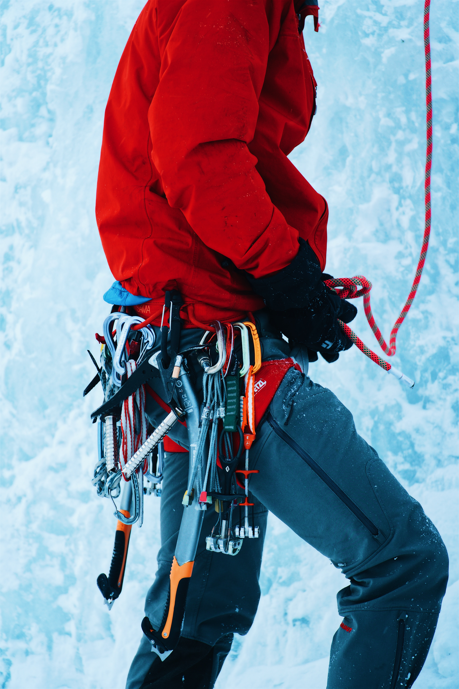

Minimum set of techniques to know for successful progress in the Basic Alpine Climbing Course

The Standard Techniques documents contain the minimum set of techniques that all students must know for successful progress in the Basic Alpine Climbing Course. Anyone may know more than what is listed here--that is perfectly acceptable and encouraged, but this set is the minimum.

The Standard Techniques documents are to be used in conjunction with the Basic Alpine Climbing Course Student Handbook, Skills Book and the course text,Mountaineering: The Freedom of the Hills, 8th ed. referred to in the Standard Techniques documents commonly referred to as “Freedom of the Hills.”
Best practice climbing techniques are presented in these documents. Some are described briefly with techniques simply listed and some are presented in more depth. Those described in depth are because of past discrepancies in the techniques taught and for some newer techniques that are not described in the Freedom of the Hills.
A few general and important items:
Safety is always the primary objective!
Helmets are REQUIRED for travel or climbing where objective hazards exist (rock fall, ice fall, exposure, crevasses, etc.)!
Gloves are REQUIRED on both hands for belaying and rappelling!
Always follow manufacturer's instructions for the gear you use! You may download instructions from many manufacturers' websites if you've lost or never received the ones that should have been included with the gear at the time of purchase. If anything in the Standard Techniques documents, Freedom of the Hillsor the Student Handbook disagrees with your gear manufacturer's instructions, follow the manufacturer's instructions and tell your leader and the Basic Alpine Climbing Course coordinator as soon as possible.
The equipment contained in the ten essential systems is the minimum required for going on any climb. Detailed discussion of the Ten Essential Systems is on pp. 34-38 of Freedom of the Hills. Additional equipment required for instructional, evaluation and climb outings is listed in the Equipment Matrix in the Student Handbook.
A 100% correct knot, bend or hitch is one that is tied correctly, dressed and tightened. Chapter 9, pp. 138-147, of Freedom of the Hills contains information on tying knots and their uses. These are the knots, bends and hitches that must be mastered:
Butterfly Coil (Rope Carrying & Storage)
Butterfly Knot
Clove Hitch
Double Bowline
Double Fisherman's Bend
Figure 8 on a Bight
Girth Hitch
Mule Knot
Munter Hitch
Overhand Knot
Prusik Hitch
Rewoven Figure 8
Single Bowline
Slip Knot
Water Knot

A personal anchor is one's safe connection to an anchor at belay and rappel stations. It is for personal protection only, NOT TO HOLD THE FALL OF SOMEONE CLIMBING. A double runner, daisy chain or Metolius PAS (Personal Anchor System) may be used as a personal anchor. One end of the chosen personal anchor must be girth hitched through both the waist belt and leg loop parts of the seat harness per the harness manufacturer's instructions. A dedicated locking carabiner added to its other end.
Grivel produced a good video which demonstrates some of the hazards of incorrect daisy chain use and advantages of their personal anchor. The Metolius PAS is very similar and is much more widely available in our area. Although daisy chains are acceptable if used correctly, you should consider buying the Metolius PAS or similar device if you can afford it.
On Basic Climbs, the rope lead constructs the anchor to be strong enough to hold a potential leader fall. The belayer is responsible for verifying the safety of the anchor and tying-in correctly. Locking carabiners or two opposite and opposed carabiners should always be used for belay anchor connections. Tie-in should be done in one of the two methods described here:
1. Separate runners and/or anchor points (fig 10-11a in MFotH 8th ed.): Connect the rope to the closest runner/anchor point with a clove hitch on a locking carabiner. Adjust to the needed length. Backup that connection with a Figure 8 on a bight connected to the more distant runner/anchor point through another locking carabiner. If the runners/anchor points are equidistant from the belayer along the line of force, the carabiners may be clipped to both together.
2. Cordelette Power Point: Connect the rope to the power point with a clove hitch on a locking carabiner and adjust to the needed length. Then back it up with a Figure 8 on a bight clipped to a locking carabiner connected to the same power point.
Belaying is discussed in detail in Chapter 10 of Freedom of the Hills. These are the belaying skills and techniques that must be mastered:
Wear gloves and helmet!
Flake a rope so that it is ready for belaying (leader's end on top, belayer's end on the bottom)
Attach to anchor - see Standard Basic Techniques: Anchor Connection for Belaying
Belay using aperture-style device (ATC, Reverso, etc.) and a Munter Hitch
Belay with both left and right hand as the brake hand (Note: Belay with connection to anchor and brake hand on the same side of the body, tight against the anchor and Anchor-Belayer-Climber in line.)
Belay using good rope handling technique including the ability to handle quick transitions (paying out rope and taking in slack) and keeping the proper amount of tension or slack in the rope for both belaying a leader and a top rope climber.
Ability to catch falling weight that simulates a falling lead climber.
The Brake Hand Defined -- a brake hand is a gloved hand that is completely around the brake strand of the rope with fingertips touching the palm of the hand.
Use proper voice commands:
On Belay…Belay On
Climbing…Climb On
Slack
Tension
Up Rope
Watch Me
Rock!...Rock!...Rock!
Off Belay…Belay Off
Know methods to communicate when the climber and belayer are not ableto hear each other--radios, rope tugs, etc.)
The Mule Knot can be used to temporarily tie off a belay to a fallen climber so that both hands may be safely used to set up an anchor and free oneself from the climbing rope. The Mule Knot is used in conjunction with a belay device or a Munter Hitch and consists of a Mule Knot backed up with an Overhand Knot both tied tightly around the loaded strand of the climbing rope.

General Notes for Both Methods
You may switch brake hands to facilitate tying the Mule Knot, but the rope must remain in the braking position, and at least one hand must ALWAYS act as the brake hand. A brake hand is a gloved hand that is completely around the brake strand of the rope.
Tie the Mule knot as close to the belay device or Munter Hitch as is practical, but not further than six inches from it. It is not necessary to slide the Mule Knt toward the belay device or Munter Hitch until it touches the belay device or Munter Hitch. Friction will hold the Mule Knot in place if it is adequately tightened.
After the Mule knot has been tied, tightened and checked, you may slowly release your brake hand grip to confirm that the Mule Knot is holding securely.
When releasing a Mule Knot which is under tension, carefully untie it while keeping your brake hand on the braking strand of the rope. Keep a firm grip and watch your fingers!
1. Fold another bight of rope over the loaded strand of the climbing rope going to the fallen climber and push it through the loop. Remove any slack and pull the knot tight by pulling on the upper strand
2. Pull a bight of rope through the locking carabiner on your harness from right to left
3. Pull the bight behind the loaded strand of rope going to the fallen climber and twist to forma loop. Note that the twist and its direction must be done.
4. Fold another bight of rope over the loaded strand of the climbing rope going to the fallen climber and push it through the loop.
5. Remove any slack and pull the knot tight by pulling on the upper strand. This is the Mule Knot, a slip knot around the climbing rope.
6. Pull additional slack through the mule knot as needed by pulling on the lower strand and back up the Mule Knot with an Overhand Knot around the climbing rope
Step 1 - Tie off belay device (or Munter Hitch belay) with a Mule knot backed up with an overhand knot. The load is now on the belayer's harness and the belayer's hands are both free.
Step 2 - Attach a hero loop to the loaded rope with a prusik hitch. Attach a carabiner to the hero loop; this carabiner is ideally a locking carabiner, but can be a non-locking carabiner. It is helpful if the carabiner is suitable for a Munter Hitch. Connect the free end of the rope from the belayer tie-in at the anchor to the carabiner on the hero loop. This connection can be a Munter-Mule.
Step 3- Untie the Device-Mule (or Munter-Mule) from step 1 and slowly transfer the load to the hero loop using the belay device (or Munter hitch).
Step 4 - Connect the rope to the anchor with a Figure 8 on a bight as a backup, and then remove the belay device.
These are the rappelling skills and techniques that must be mastered:
Wear gloves and helmet!
Rappel with an aperture-style device (ATC, Reverso, etc.)
Rappel with a Munter Hitch . See video here
Launching techniques:
1. Backing over a steep face with no foot holds
2. Stepping down using foot holds
3. Sit & Spin
Safely stowing personal anchor before launching: one-handed (leave brake hand on), use the leg wrap, or use an autoblock
Stopping mid-rappel and Safety Backups
Leg Wrap - wrap around back and then around leg opposite brake hand
Autoblock - 6mm nylon cord okay in addition to options in Freedom of the Hills
Fireman's Belay
Rappel on low-angle terrain with an Arm Wrap rappel
Voice Commands:
On Rappel
Rock!...Rock!...Rock!
Off Rappel
Climb anything up to 5.4 in good style in mountaineering boots. Techniques include face climbing, friction climbing, mantling, use of counterforce (stemming, lie backing and undercling), crack climbing, chimney climbing and down climbing. See Freedom of the Hills Chapter 12, 210-238 for details on rock climbing techniques. Other good references are listed in the Student Handbook.

Demonstrate an understanding and awareness of objective hazards including rock fall and loose rock, especially while scrambling in 3rd and 4th class terrain.
Clean protection as the second/following climber—remove protection from rock, attach to harness or over shoulder and then unclip from the rope. This includes knowledge of and ability of removing passive and active protection, and stowing protection, carabiners, runners and cordelettes to minimize tripping and “catch” hazards.
One of the most important shifts in emphasis in snow climbing in recent years is keeping an ice axe self-belay at the ready and executing it promptly and correctly. It is far better to prevent a misstep or fall from turning into long, uncontrolled slide than it is to fight for survival with self-arrest. Self-belay is one of the most important snow climbing techniques—learn it well!
The snow climbing techniques that must be mastered are listed below and discussed in detail in Freedom of the Hills Chapter 16 and Chapter 18.
Cane - Self-arrest Grasp
Cane - Self-belay Grasp
Stake “two-handed” Grasp
Ice axe Self-belay!
Stowing/carrying an Ice Ax
Carry with shaft in hand, spike forward and pick down
Stow between pack and back
Stow on pack with guards on
Ascending Techniques
Climbing in Balance
Kicking Steps Efficiently
The Rest Step
Straight Up vs. Traversing
Descending Techniques
Sitting Glissade (no crampons!)
Plunge Stepping (it is best to practice on a very steep slope with a belay)
Backing DownSelf-Arrest - the last ditch effort…a fight for survival!
Head Down on Belly
Head Down on Back
Head Up on Belly
Head Up on Back
Picket (deadman and vertical placements)
Bollard
Belay Techniques on Snow
Sitting Belay with an Anchor
Boot Axe Belay
Carabiner Ice axe Belay (w/hip belay)
Belay Commands - see Standard Basic Technique: Belaying
Crampon Techniques
Flat-foot Technique -- all points in the snow/ice
Climbing up and down
Snow Camping
Spend at least one overnight camping in snow including practice in selecting appropriate gear, setting up tent on snow, cooking and preparing for an early morning "alpine start.” Hazard Awareness.
Understanding and awareness of objective hazards encountered while climbing in mountain terrain
including brush (bushwhacking), rock fall, ice fall, moats, snow bridges, and avalanches.
These are the skills and techniques that must be mastered:
Tying In - End Person
Rope tied directly to harness with a Rewoven
Prusik slings attached to rope with three-wrap Prusik Hitch
Seat Prusik tied above the foot prusik and clipped to a locking carabiner on the seat harness
Foot prusik stowed neatly
Chest harness worn, rope not clipped to chest harness
Tying In - Middle Person (Option 1)
Butterfly Knot tied in rope clipped to locking carabiner on the seat harness
Prusik slings attached to rope with three-wrap Prusik Hitch (prusik slings may be attached both on one side of the Butterfly Knot or one on each side)
Seat prusik clipped to second locking carabiner on the seat harness
Foot prusik stowed neatly
Chest harness worn, rope not clipped to chest harness.
Tying In - Middle Person (Option 2)
Rope tied directly to harness with a Double Bowline
Prusik slings attached to rope with three-wrap Prusik Hitch (prusik slings may be attached both on one side of the tie in or one on each side)
Seat prusik clipped to a locking carabiner on the seat harness
Foot prusik stowed neatly
Chest harness worn, rope not clipped to chest harness
Traveling While Roped Up
Keep the rope on your downhill side and your ice axe in your uphill hand
Keep slack out of the rope
Turn corners by adjusting speed to keep slack out of rope
Communicate and be ready to team arrest while rope team is crossing a crevasse
Team Arrest when a rope mate falls
Pass protection in a running belay so that you are always connected to the piece of protection
Crevasse Rescue
Crevasse rescue can be a complicated, 100-step process that seems tempting to memorize, but understanding the main concepts of crevasse rescue is required and will serve you far better in the long run.
SAE are the three letters that represent the main steps to crevasse rescue:
Stop the Fall (Team Arrest),
Build an Anchor, and
Extract the subject.
Rescue Techniques that must be mastered to extract a subject:
Self-rescue using the Texas Prusik System
Raise by Brute Force
Raise with 3:1 Mechanical Advantage “Z-pulley” System
Raise with 2:1 Mechanical Advantage “Single-Pulley” System
The lip of a crevasse most often presents the two greatest challenges of crevasse rescue:
Rope entrenchment adds significantly to the force needed to raise the subject. Placing some “padding” under the rope at the lip such as an ice axe can help dramatically reduce the pulling power needed to raise the subject.
The lip of a crevasse is very often overhanging. Pulling very slowly as the subject nears the lip is imperative to prevent them from being injured or killed. The overhanging lip also makes pulling the subject over the lip very difficult. Creative solutions are often necessary. For this reason, practicing crevasse rescue from a real crevasse is highly recommended.
All rescuers must be connected to the anchor at all times. A rescuer traveling between the anchor and crevasse lip must be connected in such a way to minimize the distance traveled if they were to fall.
A good prusik-tending pulley is required for effective and efficient crevasse rescue when mechanical advantage is required. The only two pulleys that meet these rigorous requirements are the Petzl “Mini” and SMC “CR.” Choose one of them only! There is an extensive study of crevasse rescue pulleys if you are inclined to review the subject.
Subscribe to our Newsletter for the Latest Updates.